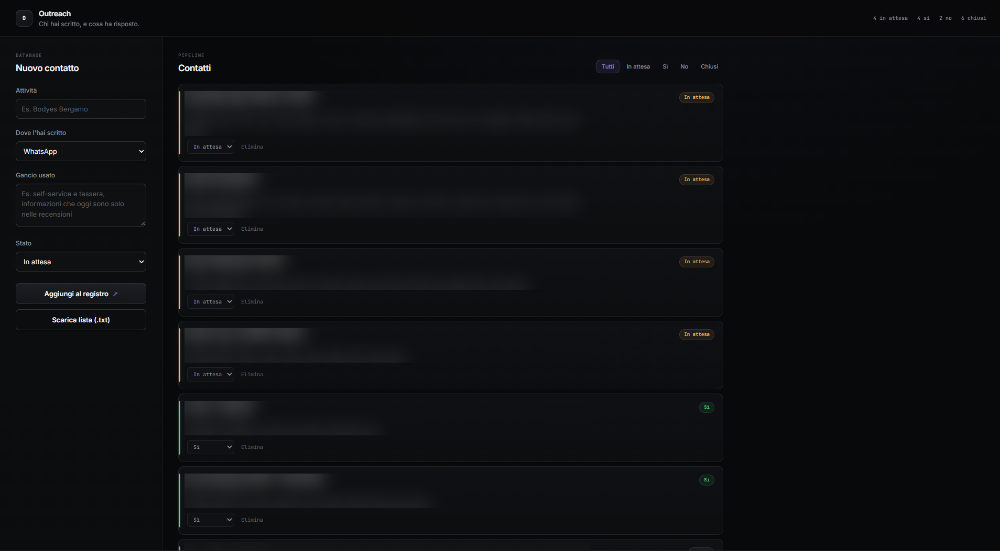
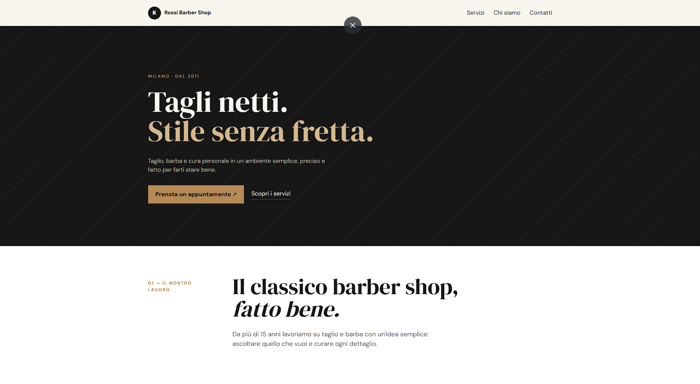
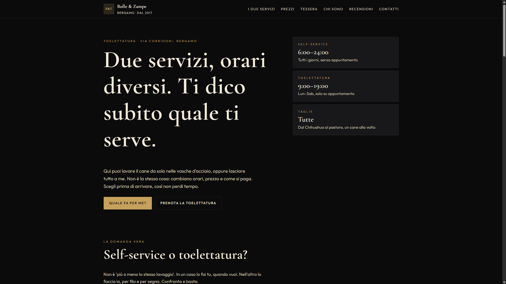
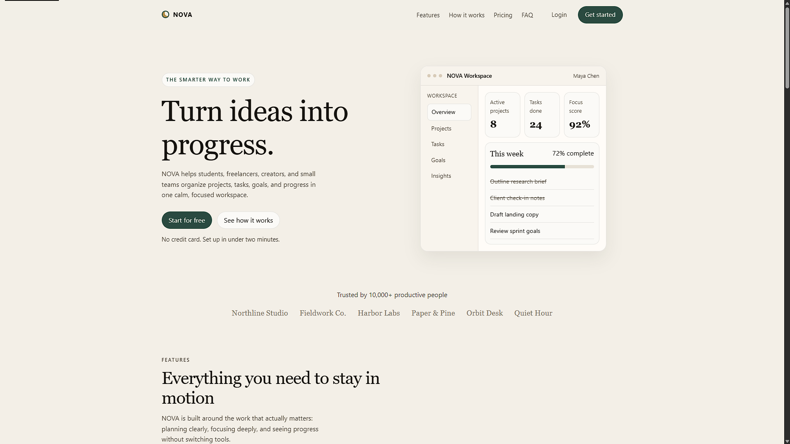

PERSONAL TOOL
Outreach
Uno strumento che ho costruito per gestire il mio outreach commerciale: contatti, stato delle conversazioni e organizzazione del lavoro in un unico posto.
Frequento l'ITIS Paleocapa di Bergamo e il mio obiettivo è diventare imprenditore nel mondo online. Intanto parto da qui: siti per attività vere.
La parte che mi piace di più è parlare con le persone: capire qual è il loro problema e trovare il modo di risolverlo. E ogni giorno cerco di diventare almeno l'1% più bravo di ieri.

Uno strumento che ho costruito per gestire il mio outreach commerciale: contatti, stato delle conversazioni e organizzazione del lavoro in un unico posto.

Demo site per attività locale, pensato per presentare servizi, identità e contatti in modo diretto.
Visita il sito ↗
Sito demo per un'attività locale immaginaria, con focus su chiarezza, servizi e presenza online.
Visita il sito ↗
Un altro progetto costruito per allenare design, struttura e sviluppo di un prodotto web completo.
Visita il sito ↗Siti costruiti per attività reali, pubblicati online e usati ogni giorno dai loro clienti.
"Wow! Che bello! Mi piace proprio! Semplice e intuitivo, hai capito subito le mie esigenze! Bravissimo Marco!!!"
"Grazie Marco per la tua dedizione, per l'impegno e per la passione che ci hai messo. È stato un lavoro molto intenso, svolto in più sedute. Ti ringrazio di cuore per avermi aiutato anche nei giorni festivi e fuori orario: sei stato molto competente e hai ascoltato le mie esigenze. Sono stato molto felice di averti conosciuto. Se avrò bisogno di qualcosa in futuro ti ricontatterò volentieri."
Scrivimi direttamente. Niente form inutili, niente giri strani.